에너지관리기사 (2007-03-04 기출문제)
1과목: 연소공학
1. 10Nm3 단일기체를 연소가스 분석결과 H2O 20Nm3, CO2Nm3, CO2 8Nm3을 얻었다면 이 기체연료는?
- CH4
- C2H6
- C2H2
- C3H8
(정답률: 65%)

2. 다음 반응식으로부터 프로판 1kg의 발열량을 계산하면 약 몇 kcal인가?
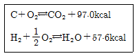
- 7,910
- 9,550
- 11.850
- 15,710
(정답률: 39%)
3. 품질이 좋은 고체연료의 조건으로 옳은 것은?
- 회분이 많을 것
- 고정탄소가 많을 것
- 황분이 많을 것
- 수분이 많을 것
(정답률: 74%)
4. 기체연료의 특징에 대한 설명 중 가장 거리가 먼 것은?
- 연소효율이 높다.
- 단위 용적당 발열량이 크다.
- 고온을 얻기 쉽다.
- 자동제어에 의한 연소에 적합하다.
(정답률: 69%)
5. 연소에서 고온부식의 발생에 대한 설명으로 옳은 것은?
- 연료 중 황분의 산화에 의해서 일어난다.
- 연료의 연소 후 생기는 수분이 응축해서 일어난다.
- 연료 중 수소의 산화에 의해서 일어난다.
- 연료 중 바나듐의 산화에 의해서 일어난다.
(정답률: 79%)
6. 어떤 연료를 분석한 결과를 탄소(C), 수소(H), 산소(O) 및 황(S) 등으로 나타낼 때 이 연료를 연소시키는 데 필요한 이론산소량(O0)을 계산하는 식은? (단, 각 원소의 원자량은 산소 16, 수소 1, 탄소 12, 황 32이다.)
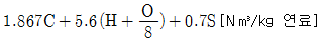
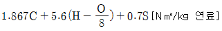
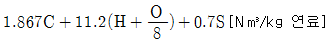
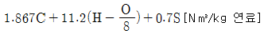
(정답률: 59%)
7. 분무각도가 30°정도로 작고 유량조절범위가 크며 정도가 높은 연료로 무화가 가능한 버너는?
- 고압기류식 버너
- 압력분무식 버너
- 회전식 버너
- 건타입 버너
(정답률: 58%)
8. 탄소(C) 86%, 수소(H) 14%의 중유를 완전연소시켰을때 CO2max[%]는?
- 15.1
- 17.2
- 19.1
- 21.1
(정답률: 20%)
9. 과잉공기량이 많을 때 일어나는 현상으로 옳은 것은?
- 배기가스에 의한 열손실이 감소한다.
- 연소실의 온도가 높아진다.
- 연료 소비량이 작아진다.
- 불완전연소물의 발생이 적어진다.
(정답률: 56%)
10. NOx의 배출을 최소화할 수 있는 방법이 아닌 것은?
- 미연소분을 최소화하도록 한다.
- 연료와 공기의 혼합을 양호하게 하여 연소온도를 낮춘다.
- 저온배출가스 일부를 연소용 공기에 혼입해서 연소용 공기 중의 산소농도를 저하시킨다.
- 버너 부근의 화염온도는 높이고 배기가스 온도는 낮춘다.
(정답률: 75%)
11. 다음 중 연료의 발열량을 측정하는 방법이 아닌 것은?
- 열량계에 의한 방법
- 미분탄 연소방식에 의한 방법
- 공업분석에 의한 방법
- 원소분석에 의한 방법
(정답률: 46%)
12. 세정 집진장치의 입자 포집원리에 대한 설명중 틀린 것은?
- 액적에 입자가 충돌하여 부착한다.
- 미립자의 확산에 의하여 액적과의 접촉을 좋게 한다.
- 배기의 습도 감소에 의하여 입자가 서로 응집한다.
- 입자를 핵으로 한 증기의 응결에 의하여 응집성을 증가시킨다.
(정답률: 62%)
13. 링겔만 농도표는 어떤 목적으로 사용되는가?
- 연돌에서 배출되는 매연농도 측정
- 보일러수의 pH 측정
- 연소가스 중의 탄산가스 농도 측정
- 연소가스 중의 SO3 농도 측정
(정답률: 75%)
14. 이소프로판 1kg을 완전연소시키는 데 필요한 이론 공기량은 약 몇 kg인가?
- 10.4
- 31.1
- 60.1
- 63.0
(정답률: 48%)
15. 다음 표와 같은 조성을 갖는 수성가스를 20% 과잉 공기로 연소시킬 때의 이론공기량(Nm3/Nm3)은?
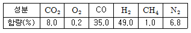
- 2.50
- 4.91
- 6.57
- 8.46
(정답률: 22%)
16. 중유의 성질에 대한 설명 중 옳은 것은?
- 점도에 따라 1,2,3급 중유로 구분한다.
- 원소 조성은 H가 가장 많다.
- 비중은 약 0.72~0.76 정도이다.
- 인화점은 약 60~150℃ 정도이다.
(정답률: 78%)
17. 고체연료의 일반적인 특징을 옳게 설명한 것은?
- 완전연소가 가능하며 연소효율이 높다.
- 연료의 품질이 균일하다.
- 점화 및 소화가 쉽다.
- 석탄의 주성분은 C, H, O 이다.
(정답률: 69%)
18. 탄소(C) 86%, 수소(H2) 12%, 황(S) 2%의 조성을 갖는 중유 100kg을 표준상태(0℃, 101,325kPa)에서 완전 연소시킬 때 C는 CO2가 되고, H는 H2O가 되며, S는 SO2가 되었다고 하면 압력 101,325kPa, 온도 590K에서 연소가스의 체적은 약 몇 m3인가?
- 600
- 620
- 640
- 660
(정답률: 38%)
19. 가연성 액체에서 발생한 증기가 공기중 농도가 연소범위 내에 있을 겨우 불꽃을 접근시키면 불이 붙는데 이때 필요최저온도를 무엇이라고 하는가?
- 기화온도
- 인화온도
- 착화온도
- 임계온도
(정답률: 56%)
20. 공기비(m)에 대한 식으로 옳은 것은?
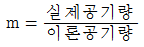
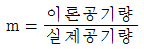
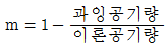
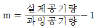
(정답률: 70%)
2과목: 열역학
21. 포화증기를 단열 압축시켰을 때의 설명으로 옳은 것은?
- 압력과 온도가 올라간다.
- 압력은 올라가고 온도는 떨어진다.
- 온도는 불변이며 압력은 올라간다.
- 압력과 온도 모두 변하지 않는다.
(정답률: 39%)
22. 석연판과 내화벽돌, 보온벽돌이 3층으로 형성된 노벽이 있다. 그 두께가 각각 10cm, 20cm, 10cm이고, 열전도도는 각각 8, 1, 0.2[kcal/mㆍhㆍ℃]이다. 노내벽온도는 1,100℃이고 외벽 온도는 60℃일 때 벽면 1m2에서 매시간 약 얼마의 열손실이 있는가?
- 150kcal
- 1,320kcal
- 1,460kcal
- 1,640kcal
(정답률: 32%)
23. 다음 그림은 어떠한 사이클과 가장 가까운가?
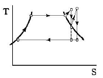
- 디젤(Diesel) 사이클
- 재열(Reheat) 사이클
- 합성(Composite) 사이클
- 재생(Regenerative) 사이클
(정답률: 74%)
24. 비압축성 유체에 있어서 체적팽창계수 β의 값은 얼마인가?
- β=0
- β=1
- β＜0
- β＞0
(정답률: 39%)
25. 높이 50m인 폭포에서 낙하한 물의 온도는 1kg 당약 몇 ℃ 높아지는가? (단, 낙하에 의한 에너지는 모두 열로 변환된다.)
- 0.02℃
- 0.12℃
- 0.22℃
- 0.32℃
(정답률: 79%)
26. 폐쇄계(System)에서 경로 A → C → B를 따라 100J의 열이 계로 들어오고 40J의 일을 외부에 할 경우 B → D → A를 따라 계가 되돌아올 때 계가 30J의 일을 받는다면 이 과정에서 계는 얼마의 열을 방출 또는 흡수하는가?
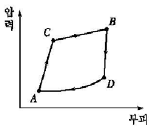
- 30J 흡수
- 30J 방출
- 90J 흡수
- 90J 방출
(정답률: 50%)
27. 열화학반응식에 대한 설명으로 옳지 않은 것은?
- 일반적으로 물질의 상태를 표시한다.
- 일반적으로 물리적 조건(온도, 압력)을 명시한다.
- 발열반응에서 평형 반응률은 온도상승과 더불어 저하한다.
- 일반적으로 반응열을 화학반응식에 붙여 쓸 때 발열인 경우 - 부호를, 흡열인 경우는 + 부호를 표시한다.
(정답률: 62%)
28. 단열비가역 변화를 할 때 전체 엔트로피는 어떻게 변하는가?
- 감소한다.
- 증가한다.
- 변화가 없다.
- 주어진 조건으로는 알 수 없다.
(정답률: 53%)
29. 카르노(Carnot) 냉동 사이클의 설명 중 틀린 것은?
- 가장 효율이 높다.
- 실제적인 냉동 사이클이다.
- 카르노(Carnot) 열기관 사이클의 역이다.
- 냉동 사이클의 기준이 된다.
(정답률: 62%)
30. 공기 30kg을 일정 압력하에 100℃에서 900℃까지 가열할 때 공기의 정압비열을 0.241kcal/kgㆍ℃, 정적비열을 0.127kcal/kgㆍ℃라고 하면 엔탈피 변화는 약 몇 kcal인가?
- 36.8
- 216.9
- 3048
- 5784
(정답률: 30%)
31. 냉동기의 용량을 표시하는 단위인 1냉동톤을 바르게 설명한 것은?
- 1시간에 0℃의 물 1톤을 0℃로 얼게 만들 수 있는 용량의 냉동기
- 1시간에 1톤의 냉각수를 사용하는 냉동기
- 24시간에 1톤의 냉각수를 사용하는 냉동기
- 24시간에 0℃의 물 1톤을 0℃로 얼게 만들 수 있는 용량의 냉동기
(정답률: 67%)
32. 다음 중 등온 압축계수 K를 옳게 표시한 것은?
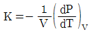
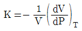
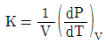
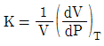
(정답률: 65%)
33. 아음속(亞音速) 유동에서 유체가 팽창하여 가속되려면 노즐 단면적은 유동방향에 따라 어떻게 되어야 하는가?
- 감소되어야 한다.
- 변화없이 유지되어야 한다.
- 증대되어야 한다.
- 단면적과는 무관하다.
(정답률: 56%)
34. 실온이 25℃인 방에서 카르노사이클 냉동기가 작동하고 있다. 냉동 공간은 -30℃로 유지되며, 이 온도를 유지하기 위해 작동유체가 냉동공간으로부터 100kw를 전열(혹은 흡열)하려 할 때 약 몇 kw의 일을 전동기가 해야 하는가?
- 22.6
- 81.5
- 207
- 414
(정답률: 22%)
35. 1atm, 25℃인 N2 1mol의 열용량이 6.9cal/℃이면 1atm, 150℃인 N2 1mol의 엔트로피는 약 얼마인가?
- 1.21cal/℃
- 2.42cal/℃
- 3.45cal/℃
- 6.21cal/℃
(정답률: 41%)
36. 임계점(Critical Point)을 초과한 수증기의 성질을 설명한 것 중 틀린 것은?
- 임계온도 이상에서도 압력이 충분히 높으면 액화된다.
- 임계온도 이상에서도 압력이 충분히 낮으면 기화된다.
- 임계압력 이상이라도 온도가 낮으면 액화된다.
- 임계압력 이하에서는 온도가 높으면 기화된다.
(정답률: 17%)
37. 다음에서 가역단열압축→정압가열→가역단열팽창→정압냉각의 4개 과정으로 이루어지는 사이클은?
- Otto 사이클
- Diesel 사이클
- Sabathe 사이클
- Brayton 사이클
(정답률: 53%)
38. 다음 그림은 어떤 사이클에 가장 가까운가?
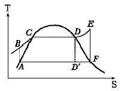
- 디젤 사이클
- 냉동 사이클
- Otto 사이클
- Rankine 사이클
(정답률: 57%)
39. 압력 10kgf/cm2에서 공급되는 보일러로부터의 수증기가 건도 0.95로 알려져 있다. 이 수증기 1kg당의 엔탈피는 약 몇 kcal인가? (단, 10kgf/cm2에서 포화수의 엔탈피는 181.2kcal/kg, 포화증기의 엔탈피는 662.9kcal/kg이다.)
- 457.6
- 638.8
- 810.9
- 1120.5
(정답률: 41%)
40. 에릭슨(Ericsson) 사이클이란 다음 중 어느 과정을 거치는 사이클인가?
- 등온압축 → 정압가열 → 등온팽창 → 정압냉각
- 등온압축 → 정압가열 → 단열팽창 → 정압냉각
- 단열압축 → 정압가열 → 단열팽창 → 정압냉각
- 단열압축 → 정압가열 → 등온팽창 → 정적비열
(정답률: 55%)
3과목: 계측방법
41. 다음 중 진공도(Pvac)에 대하여 옳게 표현한 식은? (단, Pabs는 절대압력, Patm은 대기압이다.)
- Pvac = Patm - Pabs
- Pvac = Patm + Pabs
- Pvac = Pabs - Patm
- Pvac = Pabs / Patm
(정답률: 45%)
42. 다음 중 제백(Seebeck) 효과에 대하여 옳게 설명한 것은?
- 어떤 결정체를 압축하면 기전력이 일어난다.
- 성질이 다른 두 금속의 접점에 온도차를 두면 열기전력이 일어난다.
- 고온체로부터 모든 파장의 전방사에너지는 절대온도의 4승에 비례하여 커진다.
- 고체가 고온이 되면 단파장 성분이 많아진다.
(정답률: 71%)
43. 대기압하에서 보일러의 계기에 나타난 압력이 6kg/cm2이다. 이를 절대압력으로 표시할 때 가장 가까운 값은?
- 3kg/cm2
- 5kg/cm2
- 6kg/cm2
- 7kg/cm2
(정답률: 65%)
44. 다음 중 탄성 압력계에 속하지 않는 것은?
- 부자식 압력계
- 다이어프램 압력계
- 벨로스식 압력계
- 부르동관 압력계
(정답률: 50%)
45. 다음 중 저온에 대한 정밀측정에 가장 적합한 온도계는?
- 열전대온도계
- 저항온도계
- 광고온계
- 방사온도계
(정답률: 45%)
46. 다음 중 저항온도계에 대한 설명으로 옳은 것은?
- 일반적으로 온도가 증가함에 따라 금속의 전기저항이 감소하는 현상을 이용한 것이다.
- 저항체는 저항온도계수가 적어야 한다.
- 일정온도에서 일정한 저항을 가져야 한다.
- 저항체로서 주로 Fe가 사용된다.
(정답률: 39%)
47. 유로에 고정된 교축기구를 두어 그 전후의 압력차를 측정하여 유량을 구하는 유량계의 형식이 아닌 것은?
- 오리피스미터
- 벤투리미터
- 로터미터
- 플로노즐
(정답률: 50%)
48. 200℃는 화씨온도로 몇 ℉인가?
- 232℉
- 392℉
- 417℉
- 47℉
(정답률: 48%)
49. 산소의 농도를 측정할 때 기전력을 이용하여 분석, 계측하는 분석계는?
- 자기식 O2계
- 세라믹식 O2계
- 연소식 O2계
- 밀도식 O2계
(정답률: 45%)
50. 자동제어장치의 검출부에 대하여 옳게 설명한 것은?
- 압력, 온도, 유량 등의 제어량을 측정하여 그 값을 전기 등의 신호로 변환시켜 비교부로 전송하는 부분
- 제어량의 값을 기준입력과 비교하기 위한 신호부분
- 기준입력과 피드백된 양을 비교하여 얻은 편차량의 신호부분
- 제어대상에 대하여 실제로 작용을 걸어오는 부분
(정답률: 64%)
51. 대칭성 2원자분자를 제외한 CO2, CH4 등 거의 대부분 가스를 분석할 수 있으며, 선택성이 우수하고, 연속 분석이 가능한 가스 분석법은?
- 적외선법
- 음향법
- 열전도율버
- 도전율법
(정답률: 66%)
52. 다음 중 질량유량 W[kg/s]에 대하여 옳게 표현한식은? (단, V[m3/s]는 부피유량, ρ[kg/m3]는 유체의 밀도이다.)
- W=V • ρ
- Q=V/ρ
- W=1/Vρ
- W=ρ/V
(정답률: 45%)
53. 전자유량계의 특징에 대한 설명 중 틀린 것은?
- 압력손실이 거의 없다.
- 응답이 매우 빠르다.
- 높은 내식성을 유지할 수 있다.
- 모든 액체의 유량 측정이 가능하다.
(정답률: 58%)
54. 가스크로마토그래피법에 사용되는 검출기 중 물에 대하여 감도를 나타내지 않기 때문에 자연수 중에 들어있는 오염물질을 검출하는 데 유용한 검출기는?
- 불곷이온화검출기
- 열전도도검출기
- 전자포획검출기
- 원자방출검출기
(정답률: 48%)
55. 석유화학, 화약공장과 같은 화기의 위험성이 있는 곳에 사용되어 신뢰성이 높은 입력신호 전송방식은?
- 공기압식
- 유압식
- 전기식
- 유압식과 전기식의 결합방식
(정답률: 57%)
56. 차압식 유량계의 특징이 아닌 것은?
- 조리개 전후에는 지름이 동일한 직관이 필요하다.
- 고온 고압의 유체를 측정할 수 있다.
- 레이놀즈수 1⑤ 이하는 유량계수가 변화한다.
- 압력손실이 작다.
(정답률: 30%)
57. 경유를 사용한 분동식 압력계의 사용압력(kg/cm2) 범위는?
- 40~100
- 100~300
- 300~500
- 500~1000
(정답률: 34%)
58. 조절기의 제어동작 중 비례적분 동작을 나타내는 기호는?
- P
- PI
- PID
- PD
(정답률: 54%)
59. 출력 측의 신호를 입력 측에 되돌려 비교하는 제어 방법은?
- 인터록(Inter Lock)
- 시퀀스(Sequence)
- 피드백(Feed Back)
- 리셋(Reset)
(정답률: 59%)
60. 액주에 의한 압력측정에서 정밀측정을 위한 보정(輔正)으로 반드시 필요로 하지 않는 것은?
- 모세관 현상의 보정
- 중력의 보정
- 온도의 보정
- 높이의 보정
(정답률: 71%)
4과목: 열설비재료 및 관계법규
61. 국가에너지절약추진위원회의 구성이 아닌 것은?
- 기획재정부차관
- 교육과학기술부차관
- 에너지관리공단이사장
- 고용노동부차관
(정답률: 75%)
62. 다음 보온재 중 밀도가 가장 낮은 것은?
- 글라스 울
- 규조토
- 펄라이트
- 석면
(정답률: 67%)
63. 축요(築窯) 시 가장 중요한 것은 적합한 지반(地盤)을 고르는 것이다. 다음 중 지반의 적부 결정과 가장 거리가 먼 것은?
- 지내력시험
- 토질시험
- 팽창시험
- 지하탐사
(정답률: 60%)
64. 에너지 관리대상자가 에너지 손실요인의 개선 명령을 받은 때에는 개선명령일부터 60일 이내에 개선계획을 수립하여 산업자원부장관에게 제출하여야 하는데, 그 결과를 개선기간 만료일부터 며칠 이내에 산업자원부장관에게 통보해야 하는가?
- 7일
- 10일
- 15일
- 20일
(정답률: 55%)
65. 제철 및 제강공정 중 배소로의 사용목적으로 가장 거리가 먼 것은?
- 유해성분의 제거
- 산화도(酸化度)의 변화
- 분상광석의 괴상으로의 소결
- 원광석의 결합수의 제거와 탄산염의 분해
(정답률: 54%)
66. 보온재의 구비조건으로 가장 거리가 먼 것은?
- 밀도가 작을 것
- 열전도율이 작을 것
- 재료가 부드러울 것
- 내열, 내약품성이 있을 것
(정답률: 35%)
67. 벽돌을 1⑤~120℃에서 건조시켰을 때 무게를 w, 이것을 물 속에서 3시간 끓인 다음 물 속에서 유지시켰을 때의 무게를 w1, 물속에서 끄집어내어 표면에 묻은 수분을 닦은 후의 무게를 w2라고 할 때 흡수율을 구하는 식은?
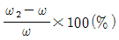
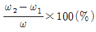
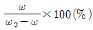
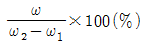
(정답률: 43%)
68. 노재의 하중연화점을 측정하는 방법으로 옳은 것은?
- 소정의 온도에서 압축강도를 측정
- 하중을 일정하게 하고 온도를 높이면서 그 하중에 견디지 못하고 변형하는 온도를 측정
- 하중과 온도를 동시에 변화시키면서 변형을 측정
- 하중과 온도를 일정하게 하고 일정시간 후의 변형을 측정
(정답률: 71%)
69. 배관의 호칭법으로 사용되는 스케줄번호를 산출하는데 가장 큰 영향을 미치는 것은?
- 관의 외경
- 관의 사용온도
- 관의 허용응력
- 관의 열팽창계수
(정답률: 50%)
70. 에너지수급 차질에 대비하기 위하여 산업자원부장관이 에너지저장의무를 부과할 수 있는 대상에 해당되는 자는?
- 연간 1천 TOE 이상 에너지 사용자
- 연건 5천 TOE 이상 에너지 사용자
- 연간 1만 TOe 이상 에너지 사용자
- 연간 2만 TOe 이상 에너지 사용자
(정답률: 42%)
71. 다음 중 효율관리기자재의 소비효율등급을 허위로 표시하였을 때의 벌칙은?
- 1년 이하의 징역 또는 1천만원 이하의 벌금
- 2천만원 이하의 벌금
- 1천만원 이하의 벌금
- 5백만원 이하의 벌금
(정답률: 23%)
72. 유체의 역류를 방지하여 한쪽 방향으로만 흐르게 하는 것으로 리프트식과 스윙식으로 대별되는 밸브는?
- 회전밸브
- 슬루스밸브
- 체크밸브
- 방열기밸브
(정답률: 72%)
73. 에너지 사용자가 에너지사용량이 기준량 이상이 될때 산업자원부령이 정하는 바에 따라 신고해야 할 사항이 아닌 것은?
- 전년도의 에너지 사용량ㆍ제품 생산량
- 당해 연도의 에너지사용예정량ㆍ제품생산 예정량
- 에너지사용기자재의 현황
- 에너지이용효과ㆍ에너지 수급체계의 영향분석 현황
(정답률: 43%)
74. 캐스터블(Castable) 내화물에 대한 설명 중 틀린 것은?
- 사용현장에서 필요한 형상이나 치수로 자유롭게 성형된다.
- 시공 후 약 24시간 후에 건조, 승온이 가능하고 경화제로 알루미나시멘트를 사용한다.
- 잔존수축과 열팽창이 크고 노 내 온도가 변화하면 스폴링을 잘 일으킨다.
- 점토질이 많이 사용되고 용도에 따라 고알루미나질이나 크롬질도 사용된다.
(정답률: 67%)
75. 에너지이용합리화의 목적으로 가장 거리가 먼 것은?
- 에너지의 합리적 이용을 증진
- 에너지 소비로 인한 환경피해 감소
- 에너지원의 개발
- 국민 경제의 건전한 발전과 국민복지의 증진
(정답률: 59%)
76. 에너지이용합리화법상 검사의 종류가 아닌 것은?
- 설계검사
- 제조검사
- 계속사용검사
- 개조검사
(정답률: 54%)
77. 85℃의 물 120kg의 온탕에 10℃의 물 140kg을 혼합하면 약 몇 ℃의 물이 되는가?
- 44.6℃
- 56.6℃
- 66.9℃
- 70.0℃
(정답률: 31%)
78. 신축이음에 대한 설명 중 틀린 것은?
- 슬리브형은 단식과 복식의 2종류가 있으며, 고온, 고압에 사용한다.
- 루프형은 고압에 잘 견디며 주로 고압증기의 옥외 배관에 사용한다.
- 벨로스형은 신축으로 인한 응력을 받지 않는다.
- 스위블형은 온수 또는 저압증기의 배관에 사용하며 큰 신축에 대하여는 누설의 염려가 있다.
(정답률: 42%)
79. 고온용 보온재가 아닌 것은?
- 우모펠트
- 규산칼슘
- 세라믹파이버
- 펄라이트
(정답률: 58%)
80. 터널가마(Tunnel Kiln)의 장점이 아닌 것은?
- 소성이 균일하여 품질이 좋다.
- 온도조절과 자동화가 용이하다.
- 열효율이 좋아 연료비가 절감된다.
- 사용연료의 제한을 받지 않고 전력소비가 적다.
(정답률: 73%)
5과목: 열설비설계
81. 보일러의 성능계산 시 사용되는 증발률(kg/m2h)에 대하여 가장 옳게 나타낸 것은?
- 실제증발량에 대한 발생증기 엔탈피와의 비
- 연료소비량에 대한 상당증발량과의 비
- 상당증발량에 대한 실제증발량과의 비
- 전열면적에 대한 실제증발량과의 비
(정답률: 43%)
82. 전열면적 10m2를 초과하는 보일러의 급수밸브 및 체크밸브는 관의 호칭 지름이 몇 mm이상이어야 하는가?
- 5
- 10
- 15
- 20
(정답률: 44%)
83. 외경 30mm의 철관에 두께 15mm의 보온재를 감은 증기관이 있다. 관 표면의 온도가 100℃, 보온재의 표면 온도가 20℃인 경우 관의 길이 15m인 관의 표면으로 부터의 열손실은 약 몇 kcal/h인가? (단, 보온재의 열전도율은 0.⑤kcal/m∙h℃이다.)
- 244
- 344
- 444
- 544
(정답률: 25%)
84. 보일러 내처리를 위한 pH 조정제가 아닌 것은?
- 가성소다
- 암모니아
- 제1인산소다
- 아황산나트륨
(정답률: 53%)
85. 보일러 수냉관과 연소실벽 내에 설치된 복사과열기의 특징은?
- 보일러 부하증대가 최대일 때 과열온도가 최대
- 보일러 부하증대가 최대일 때 과열온도는 일정
- 보일러 부하증대에 따라 과열온도가 상승
- 보일러 부하증대에 따라 과열온도가 강하
(정답률: 35%)
86. 육용 강재 보일러의 구조에 있어서 동체의 최소 두께기준으로 틀린 것은?
- 안지름 900mm 이하의 것은 6mm(단, 스테이를 부착하는 경우)
- 안지름이 900mm 초과 1350mm 이하의 것은 8mm
- 안지름이 1350mm 초과 1850mm 이하의 것은 10mm
- 안지름이 1850mm 초과하는 것은 12mm
(정답률: 72%)
87. 내경 250mm의 주철체 원통을 6kg/cm2의 내압에 견디게 할 때 두께(mm)는? (단, 허용응력은 1.5kg/mm2로 한다.)
- 3.5
- 4.0
- 5.0
- 6.5
(정답률: 28%)
88. 전열계수가 비교적 낮으므로 열교환만을 목적으로 한 용도에는 부적당하나 구조가 간단하고 제작이 쉬워서 내부 유체의 보온을 목적으로 하는 경우에 적합한 열교환기는?
- 단관식 열교환기
- 이중관식 열교환기
- 플레이트식 열교환기
- 재킷식 열교환기
(정답률: 50%)
89. 보일러 사고의 원인 중 제작상의 원인으로 볼 수 없는 것은?
- 재료불량
- 구조 및 설계불량
- 용접불량
- 급수처리불량
(정답률: 70%)
90. 보일러의 강도계산에서 보일러 동체 속에 압력이 생기는 경우 원방향의 응력은 축방향 응력의 몇 배 정도인가?
- 2배
- 4배
- 8배
- 16배
(정답률: 43%)
91. 다음 급수처리 방법 중 화학적 처리방법은?
- 이온교환법
- 가열연화법
- 증류법
- 여과법
(정답률: 64%)
92. 수압시험에서 시험수압은 규정된 압력의 몇 % 이상 초과하지 않도록 하여야 하는가?
- 3%
- 6%
- 9%
- 12%
(정답률: 32%)
93. 급수온도 20℃인 보일러에서 증기압력이 10kg/cm2이며 이때 온도 300℃의 증기가 매시간당 1ton씩 발생된 다고 할 때 상당 증발량은 약 몇 kg/h인가? (단, 증기압력 10kg/cm2에 대한 300℃의 증기엔탈피는 662kcal/kg, 20℃에 대한 급수엔탈피는 20kcal/kg 이다.)
- 1,191
- 2,048
- 2,247
- 3,232
(정답률: 48%)
94. 열교환기의 대수평균온도차를 옳게 나타낸 것은? (단, Δ1은 고온유체의 입구측에서의 유체 온도차, Δ2는 고온유체의 출구측에서의 유체 온도차이다.)
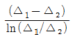
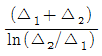
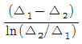
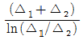
(정답률: 30%)
95. 다음 열전달법칙과 이에 관련된 내용으로 틀린 것은?
- 뉴턴의 냉각법칙-대류열 전달
- 퓨리에의 법칙-전도열 전달
- 스테판ㆍ볼츠만의 법칙-복사열 전달
- 보일ㆍ샤를의 법칙-전도열 전달
(정답률: 32%)
96. 보일러수를 pH 10.5~11.5의 약알칼리로 유지하는 이유는?
- 첨가된 염산이 강재를 보호하기 때문이다.
- 보일러수 중에 적당량의 수산화나트륨을 포함시켜 보일러의 부식 및 스케일 부착을 방지하기 위함이다.
- 과잉 알칼리성이 더 좋으나 약품이 많이 소요되므로 원가면에서 pH 10.5~11.8로 권장하고 있다.
- 표면에 딱딱한 스케일이 생성되어 부식을 완전 방지하기 때문이다.
(정답률: 73%)
97. 다음 중 프라이밍과 포밍의 원인이 아닌 것은?
- 증기부하가 적을 때
- 보일러수에 불순물, 유지분이 많이 포함되어 있을 때
- 수면과 증기 취출구가 작을 때
- 수증기변을 급히 열었을 때
(정답률: 53%)
98. 보일러의 과열에 의한 압괴(Collapse) 발생부분이 아닌 것은?
- 노통 상부
- 화실 천장
- 연관
- 거싯스테이
(정답률: 58%)
99. 열의 이동에 대한 설명 중 틀린 것은?
- 열의 전도란 정지하고 있는 물체 속을 열이 이동하는 현상을 말한다.
- 대류란 유동물체가 고온부분에서 저온부분으로 이동하는 현상을 말한다.
- 복사란 전자파의 에너지형태로 열이 고온물체에서 저온물체로 이동하는 현상을 말한다.
- 열관류란 유체가 열을 받으면 밀도가 작아져서 부력이 생기기 때문에 상승현상이 일어나는 것을 말한다.
(정답률: 39%)
100. 노통보일러 중 원통형의 노통이 2개인 보일러는?
- 라몬트 보일러
- 바브콕 보일러
- 다우삼 보일러
- 랭커셔 보일러
(정답률: 71%)
연소 반응식은 다음과 같습니다.
CH4 + 2O2 → CO2 + 2H2O
따라서, 10Nm3의 기체연료가 연소하면 CO2 8Nm3과 H2O 20Nm3이 생성됩니다.
이때 생성된 CO2와 H2O의 비율을 보면, CO2 : H2O = 8 : 20 = 2 : 5 입니다.
CH4가 연소할 때 생성되는 CO2와 H2O의 비율은 1 : 2 이므로, 이 비율과 일치하는 유일한 화합물은 CH4입니다. 따라서, 이 기체연료는 CH4입니다.